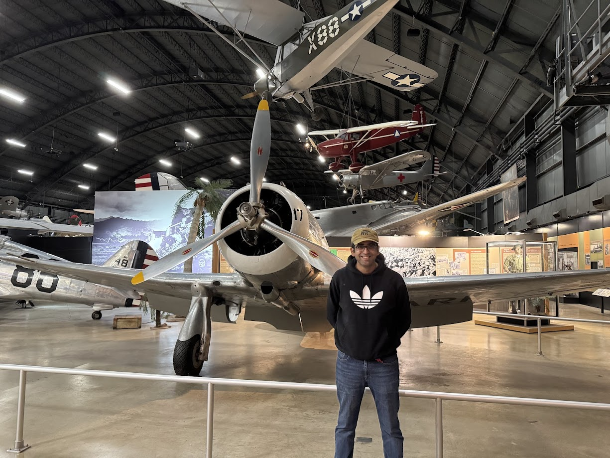
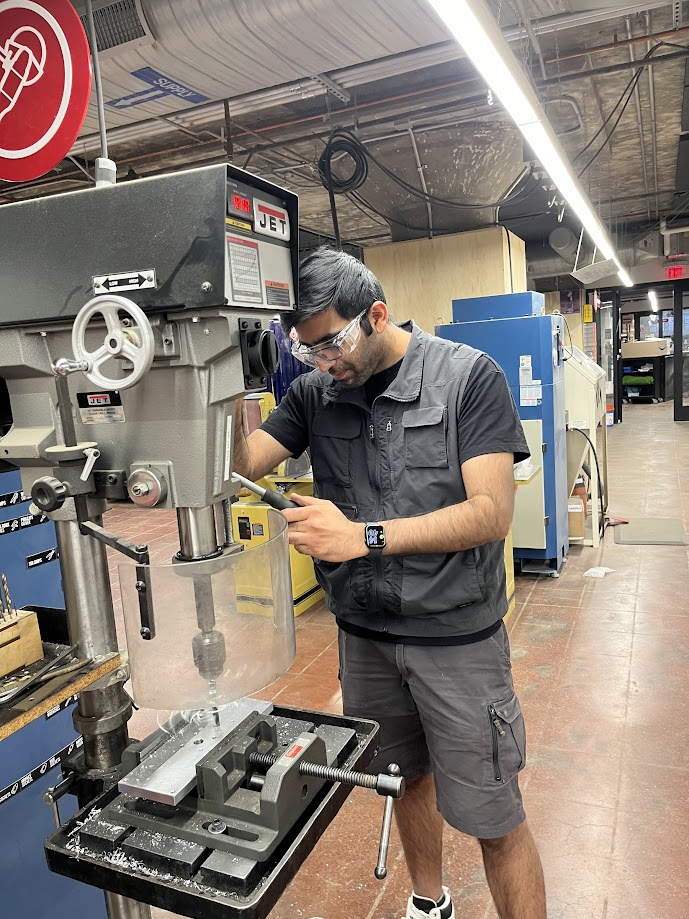
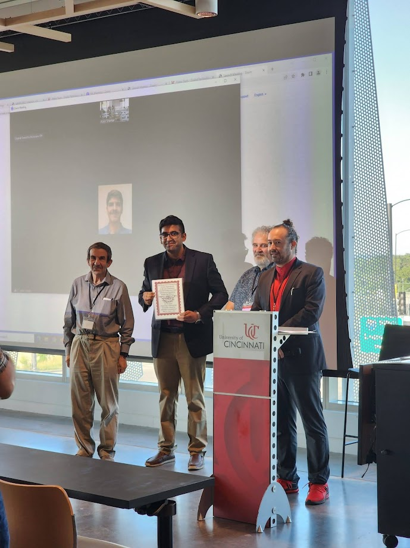

A little about me...
I am a Postdoctoral Research Associate at the University of Liverpool, working on the UKRI REMORA Project - a swarm-based robotics mission for asteroid proximity operations and planetary defense. My work combines spacecraft dynamics, control theory, and intelligent autonomy, with a focus on hardware-in-the-loop simulation and experimental validation of multi-agent systems for asteroid tracking and characterization.
I completed my Ph.D. in Aerospace Engineering from the University of Cincinnati, where I built DYNAMOS - a 12-DOF HIL spacecraft simulator for free-floating dynamics and space-servicing studies. My broader research spans robot dynamics and control, space actuators (CMGs, reaction wheels), machine learning, and intelligent autonomy, with over 30 publications and fellowships from SRIDE and IRiS.
I've taught Intelligent Robotics at the graduate level, mentored undergraduates, and contributed to multi-agency collaborations funded by AFOSR, NSF, and industry. My work is driven by a simple conviction: that curiosity and careful engineering can make a meaningful contribution to how we explore and understand space.
Outside the lab, I enjoy hiking, adventure sports, and rock music - and I'm always open to collaborations and new research ideas. Feel free to reach out.
Snapshots from my journey!
Moments, people, and places beyond research.


